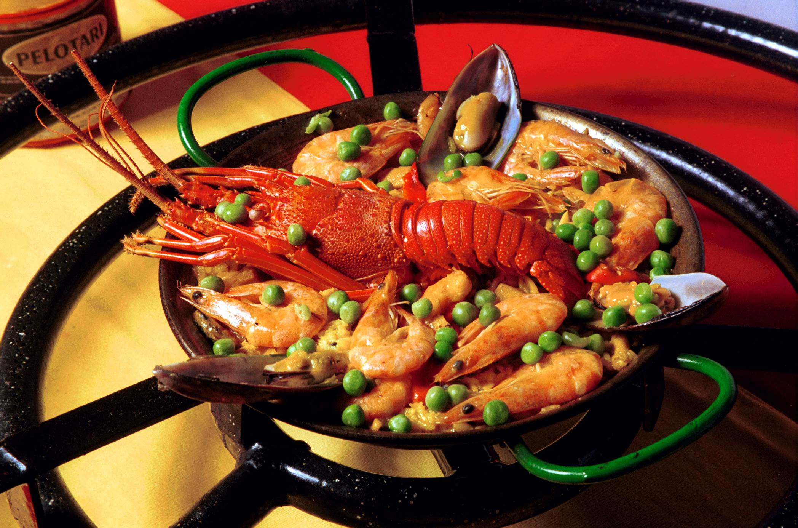
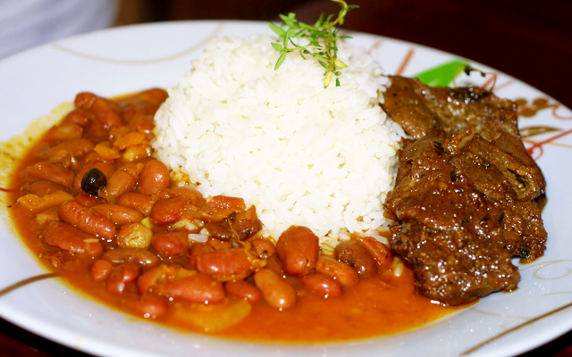
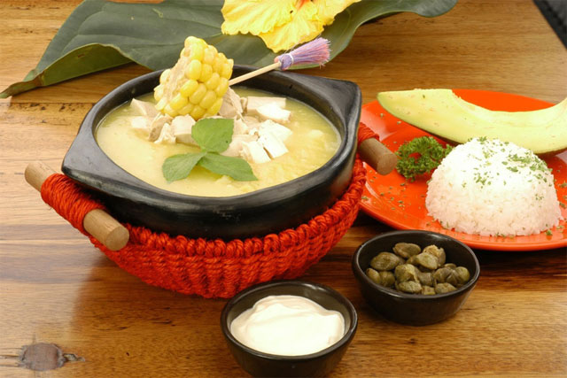
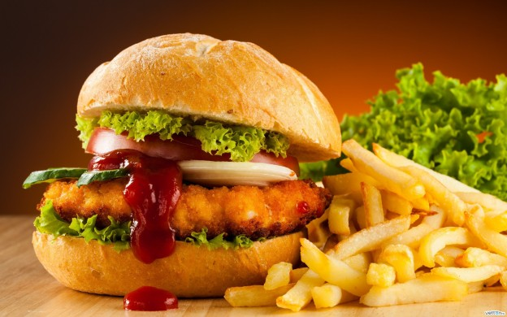
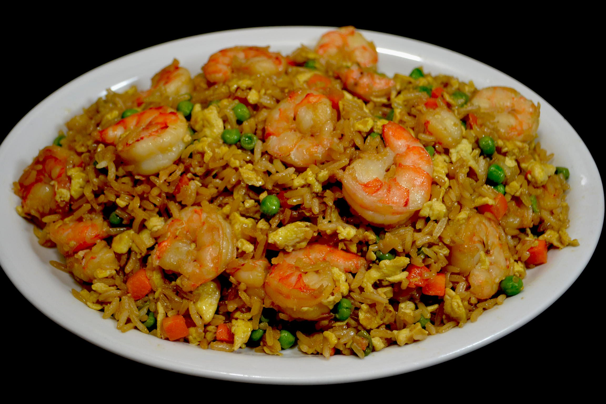

Favoritos:






Historial:
Sobrebarriga al Horno
3 de Marzo del 2017Deliciosa y nutritiva receta, ideal para cualquier ocasión y fácil de preparar.
Ingredientes
- (1) kilo y medio de sobrebarriga, debe ser delgada
- (3) tazas de caldo de carne bien consistente
- (3) cucharadas de aceite
- (5) cuharadas de cebolla cabezona rallada
- (1) cerveza
- (3) cucharadas de mantequilla
- (1) taza de miga de pan
- Sal y pimienta al gusto
Preparación
- Con anterioridad se debe adobar la carne en media botella de cerveza, la cebolla y la pimienta.
- Calentar el aceite en una olla de presión y colocar la sobrebarriga a fuego medio, debemos dorarla por los dos lados. Luego añadimos el caldo de carne y el resto de la cerveza.
- Tapamos y dejamos cocinar durante una hora contada después de que la olla empiece a pitar.
- Cuando esté listo, retiramos la sobrebarriga y la colocamos en una lata para hornear.Debemos untarle mantequilla por todos los lados y le espolvoreamos la miga de pan.
- Con el horno caliente a temperatura de 350 grados, la dejamos dorar y servimos caliente.
Podemos acompañar con papa chorreada y decoramos con una ensalada de lechuga, tomate y cebolla en rodajas.
Ajiaco Santafereño
12 de diciembre del 2016Personas: 6 // Tiempo de preparación: 90 min
Ingredientes
- (2) kilos de pechuga de pollo
- (1/2) kilo de papa sabanera
- (1/2) kilo de papa pastusa
- (1) kilo de papa criolla
- (4) mazorcas
- Sal
- Guascas
- Alcaparras
- Crema de leche
Preparación
- Cortar las mazorcas en pedazos grandes y colocarlos en una olla a fuego alto con dos litros de agua. Luego pelar las papas sabaneras y cortar en cubos para ponerlas a cocer junto con las mazorcas.
- Ahora se pelan las papas pastusas y se cortan en tiras gruesas para introducirlas a la olla, mientras tanto se retira la piel a las pechugas y se cocen con la mezcla anterior, luego de esto, lavar completamente las papas criollas y partirlas en dos colocándolas en la olla, junto con lo demás
- Después de que el pollo esté cocido se retira de la olla y se desmenuza en pedazos medianos. Baje la temperatura a fuego medio para que el contenido se espese e inmediatamente agregarle de nuevo el pollo, la sal al gusto y las guascas en manojos.